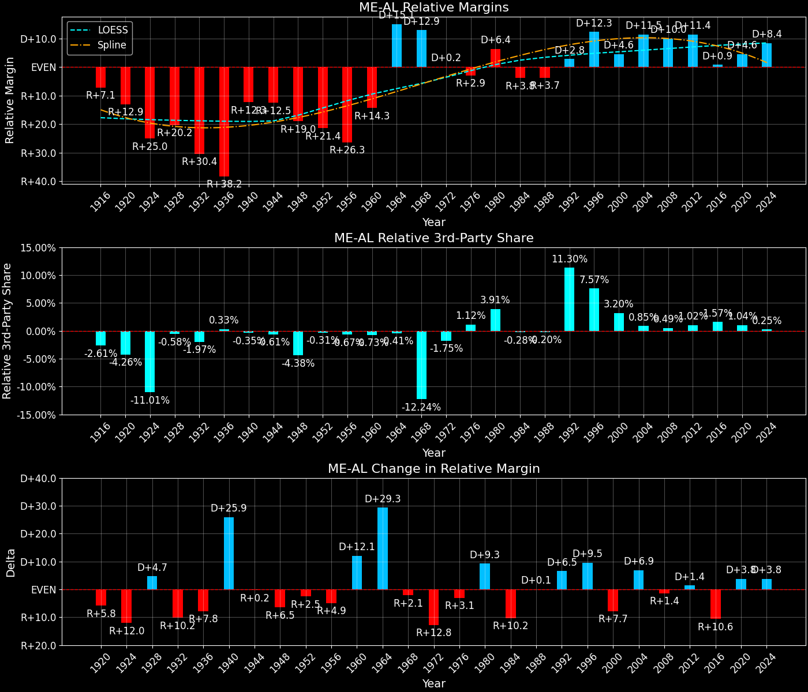
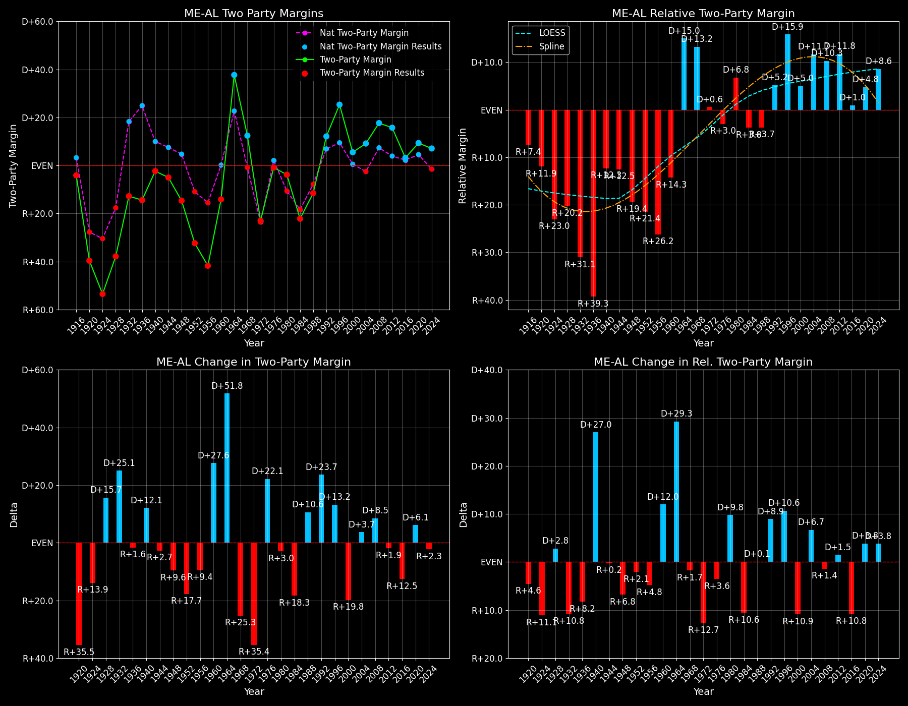

Maine (ME-AL) — Statewide

Margins · 3rd-Party share · Pres. deltas

Relative margins · Relative 3rd-Party · Rel. deltas
Maine (ME-AL) — Total Data
| Year | EVs | D | R | State Margin | Nat. Margin | Rel. Margin | Total votes |
|---|---|---|---|---|---|---|---|
| 1968 | 2 | 217,312(55.3%) | 169,254(43.1%) | D+12.2 | R+0.6 | D+12.8 | 392,936 |
| 1972 | 2 | 160,584(38.5%) | 256,508(61.5%) | R+23.0(Δ R+35.2) | R+23.5(Δ R+23.0) | D+0.6(Δ R+12.3) | 417,321 |
| 1976 | 2 | 232,279(49.2%) | 236,320(50.1%) | R+0.9(Δ D+22.1) | D+2.2(Δ D+25.7) | R+3.1(Δ R+3.6) | 472,094 |
| 1980 | 2 | 220,974(42.3%) | 238,522(45.7%) | R+3.4(Δ R+2.5) | R+9.9(Δ R+12.1) | D+6.5(Δ D+9.6) | 522,420 |
| 1984 | 2 | 214,515(38.8%) | 336,500(60.8%) | R+22.1(Δ R+18.7) | R+18.1(Δ R+8.2) | R+3.9(Δ R+10.5) | 553,144 |
| 1988 | 2 | 243,569(43.9%) | 307,131(55.3%) | R+11.5(Δ D+10.6) | R+7.7(Δ D+10.4) | R+3.7(Δ D+0.2) | 555,035 |
| 1992 | 2 | 263,420(38.8%) | 206,504(30.4%) | D+8.4(Δ D+19.8) | D+5.6(Δ D+13.3) | D+2.8(Δ D+6.5) | 679,499 |
| 1996 | 2 | 312,788(51.6%) | 186,378(30.8%) | D+20.9(Δ D+12.5) | D+8.6(Δ D+3.0) | D+12.3(Δ D+9.5) | 605,897 |
| 2000 | 2 | 319,951(49.1%) | 286,616(44.0%) | D+5.1(Δ R+15.7) | D+0.5(Δ R+8.0) | D+4.6(Δ R+7.7) | 651,790 |
| 2004 | 2 | 396,842(53.6%) | 330,201(44.6%) | D+9.0(Δ D+3.9) | R+2.5(Δ R+3.0) | D+11.5(Δ D+6.9) | 740,752 |
| 2008 | 2 | 421,923(57.7%) | 295,273(40.4%) | D+17.3(Δ D+8.3) | D+7.3(Δ D+9.7) | D+10.1(Δ R+1.4) | 731,163 |
| 2012 | 2 | 399,235(56.2%) | 291,418(41.0%) | D+15.2(Δ R+2.1) | D+3.9(Δ R+3.4) | D+11.3(Δ D+1.3) | 709,934 |
| 2016 | 2 | 354,718(47.7%) | 334,945(45.0%) | D+2.7(Δ R+12.5) | D+2.1(Δ R+1.8) | D+0.6(Δ R+10.8) | 743,941 |
| 2020 | 2 | 435,072(53.1%) | 360,737(44.0%) | D+9.1(Δ D+6.4) | D+4.4(Δ D+2.3) | D+4.6(Δ D+4.1) | 819,461 |
| 2024 | 2 | 435,652(52.4%) | 377,977(45.5%) | D+6.9(Δ R+2.1) | R+1.5(Δ R+6.0) | D+8.5(Δ D+3.9) | 831,375 |
Column explanations
- Δ
- Change (delta) in the value from the previous election year.
- Year
- Election year.
- EVs
- Number of electoral votes allocated to this state or unit.
- D
- Number of votes for the Democratic candidate (raw count(pct%)).
- R
- Number of votes for the Republican candidate (raw count(pct%)).
- State Margin
- Margin between the two major-party candidates, including third-party votes ((D - R)/total).
- Nat. Margin
- The national presidential margin for that year, including third-party votes ((D_total - R_total)/total_votes).
- Rel. Margin
- The presidential margin relative to the national presidential margin (Margin - Nat. Margin).
- Total votes
- Total voter turnout or ballots cast (when provided).
Maine (ME-AL) — Third-Party Data
| Year | D | R | Other votes | State 3rd-Party Share | 3rd-Party Nat. Share | 3rd-Party Rel. Share |
|---|---|---|---|---|---|---|
| 1968 | 217,312(55.3%) | 169,254(43.1%) | 6,370(1.6%) | 1.62% | 13.59% | -11.96% |
| 1972 | 160,584(38.5%) | 256,508(61.5%) | 229(0.1%) | 0.05% | 0.09% | -0.04% |
| 1976 | 232,279(49.2%) | 236,320(50.1%) | 3,495(0.7%) | 0.74% | 0.33% | 0.41% |
| 1980 | 220,974(42.3%) | 238,522(45.7%) | 62,924(12.0%) | 12.04% | 6.98% | 5.07% |
| 1984 | 214,515(38.8%) | 336,500(60.8%) | 2,129(0.4%) | 0.38% | 0.12% | 0.27% |
| 1988 | 243,569(43.9%) | 307,131(55.3%) | 4,335(0.8%) | 0.78% | 0.21% | 0.57% |
| 1992 | 263,420(38.8%) | 206,504(30.4%) | 209,575(30.8%) | 30.84% | 19.23% | 11.61% |
| 1996 | 312,788(51.6%) | 186,378(30.8%) | 106,731(17.6%) | 17.62% | 9.68% | 7.94% |
| 2000 | 319,951(49.1%) | 286,616(44.0%) | 45,223(6.9%) | 6.94% | 3.65% | 3.29% |
| 2004 | 396,842(53.6%) | 330,201(44.6%) | 13,709(1.9%) | 1.85% | 0.84% | 1.01% |
| 2008 | 421,923(57.7%) | 295,273(40.4%) | 13,967(1.9%) | 1.91% | 1.38% | 0.53% |
| 2012 | 399,235(56.2%) | 291,418(41.0%) | 19,281(2.7%) | 2.72% | 1.62% | 1.09% |
| 2016 | 354,718(47.7%) | 334,945(45.0%) | 54,278(7.3%) | 7.30% | 5.54% | 1.76% |
| 2020 | 435,072(53.1%) | 360,737(44.0%) | 23,652(2.9%) | 2.89% | 1.84% | 1.04% |
| 2024 | 435,652(52.4%) | 377,977(45.5%) | 17,746(2.1%) | 2.13% | 1.88% | 0.25% |
Column explanations
- Year
- Election year.
- D
- Number of votes for the Democratic candidate (raw count(pct%)).
- R
- Number of votes for the Republican candidate (raw count(pct%)).
- Other votes
- Number of votes for third-party (other) candidates (raw count(pct%)).
- State 3rd-Party Share
- Share of the vote received by third-party (other) candidates.
- 3rd-Party Nat. Share
- The national third-party share for that year (3rd-Party votes / total votes).
- 3rd-Party Rel. Share
- Third-party share relative to the national third-party share (3rd-Party share - Nat. 3rd-Party share).

Two-party margins · relative · deltas
Maine (ME-AL) — Two-Party Data
| Year | EVs | D | R | 2-Party Margin | 2-Party Nat. Margin | 2-Party Rel. Margin |
|---|---|---|---|---|---|---|
| 1968 | 2 | 217,312(56.2%) | 169,254(43.8%) | D+12.4 | R+0.7 | D+13.1 |
| 1972 | 2 | 160,584(38.5%) | 256,508(61.5%) | R+23.0(Δ R+35.4) | R+23.6(Δ R+22.9) | D+0.6(Δ R+12.5) |
| 1976 | 2 | 232,279(49.6%) | 236,320(50.4%) | R+0.9(Δ D+22.1) | D+2.2(Δ D+25.8) | R+3.1(Δ R+3.6) |
| 1980 | 2 | 220,974(48.1%) | 238,522(51.9%) | R+3.8(Δ R+3.0) | R+10.6(Δ R+12.8) | D+6.8(Δ D+9.9) |
| 1984 | 2 | 214,515(38.9%) | 336,500(61.1%) | R+22.1(Δ R+18.3) | R+18.1(Δ R+7.5) | R+4.0(Δ R+10.8) |
| 1988 | 2 | 243,569(44.2%) | 307,131(55.8%) | R+11.5(Δ D+10.6) | R+7.8(Δ D+10.4) | R+3.8(Δ D+0.2) |
| 1992 | 2 | 263,420(56.1%) | 206,504(43.9%) | D+12.1(Δ D+23.7) | D+6.9(Δ D+14.7) | D+5.2(Δ D+9.0) |
| 1996 | 2 | 312,788(62.7%) | 186,378(37.3%) | D+25.3(Δ D+13.2) | D+9.5(Δ D+2.6) | D+15.9(Δ D+10.7) |
| 2000 | 2 | 319,951(52.7%) | 286,616(47.3%) | D+5.5(Δ R+19.8) | D+0.5(Δ R+8.9) | D+5.0(Δ R+10.9) |
| 2004 | 2 | 396,842(54.6%) | 330,201(45.4%) | D+9.2(Δ D+3.7) | R+2.5(Δ R+3.0) | D+11.7(Δ D+6.7) |
| 2008 | 2 | 421,923(58.8%) | 295,273(41.2%) | D+17.7(Δ D+8.5) | D+7.4(Δ D+9.8) | D+10.3(Δ R+1.4) |
| 2012 | 2 | 399,235(57.8%) | 291,418(42.2%) | D+15.6(Δ R+2.0) | D+3.9(Δ R+3.4) | D+11.7(Δ D+1.4) |
| 2016 | 2 | 354,718(51.4%) | 334,945(48.6%) | D+2.9(Δ R+12.7) | D+2.2(Δ R+1.7) | D+0.6(Δ R+11.0) |
| 2020 | 2 | 435,072(54.7%) | 360,737(45.3%) | D+9.3(Δ D+6.5) | D+4.5(Δ D+2.3) | D+4.8(Δ D+4.2) |
| 2024 | 2 | 435,652(53.5%) | 377,977(46.5%) | D+7.1(Δ R+2.3) | R+1.6(Δ R+6.1) | D+8.7(Δ D+3.8) |
Column explanations
- Δ
- Change (delta) in the value from the previous election year.
- Year
- Election year.
- EVs
- Number of electoral votes allocated to this state or unit.
- D
- Number of votes for the Democratic candidate (raw count(pct%)).
- R
- Number of votes for the Republican candidate (raw count(pct%)).
- 2-Party Margin
- Margin between the two major-party candidates, ignoring third-party votes ((D - R)/(D + R)).
- 2-Party Nat. Margin
- The national presidential margin for that year, including third-party votes ((D_total - R_total)/total_votes).
- 2-Party Rel. Margin
- The presidential margin relative to the national presidential margin (Margin - Nat. Margin).